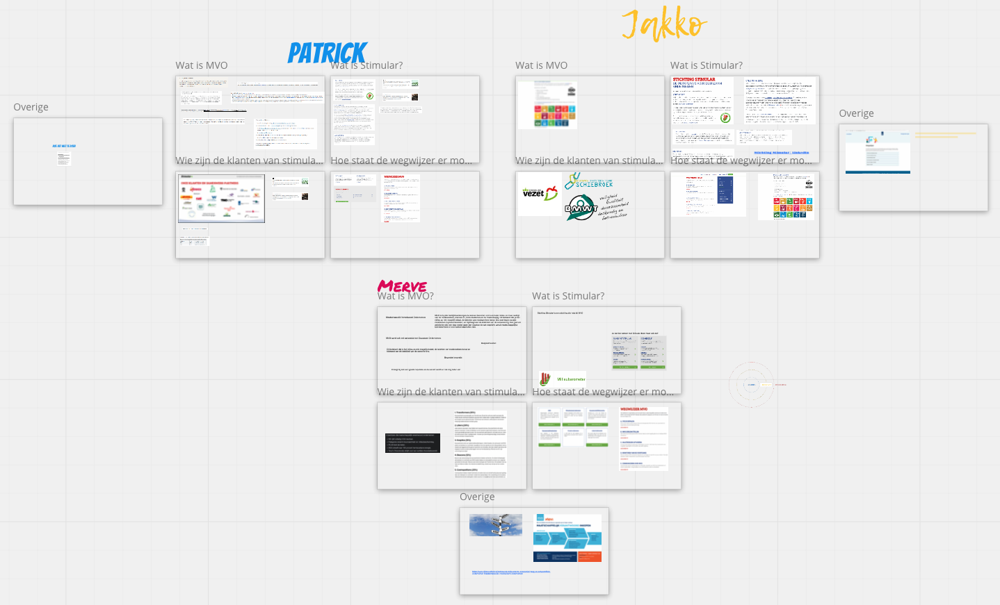
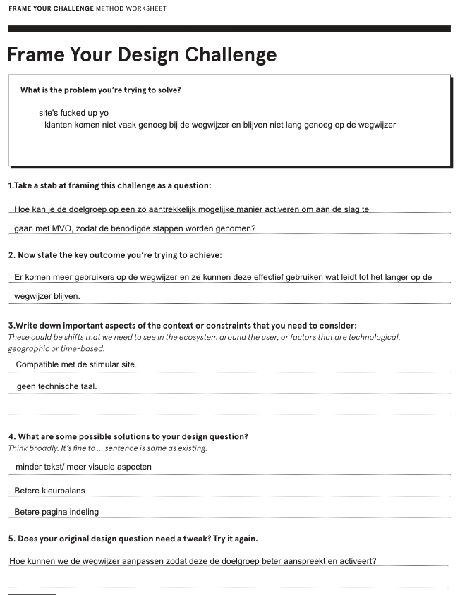
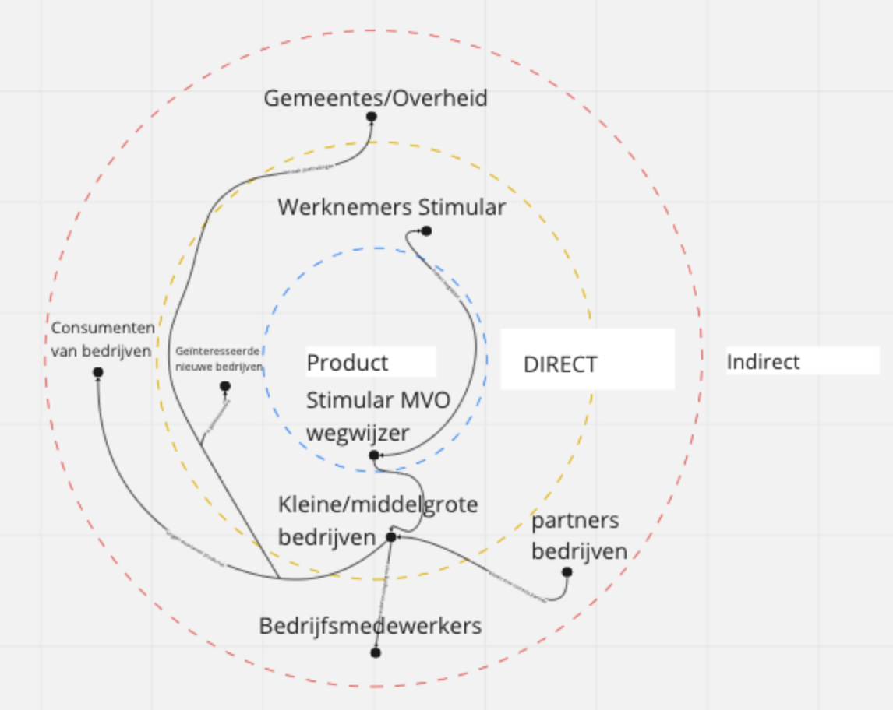
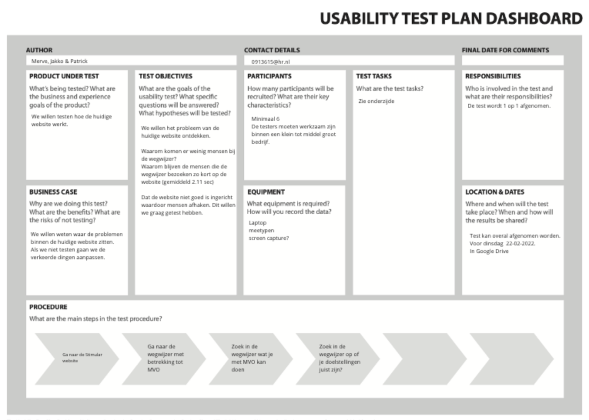
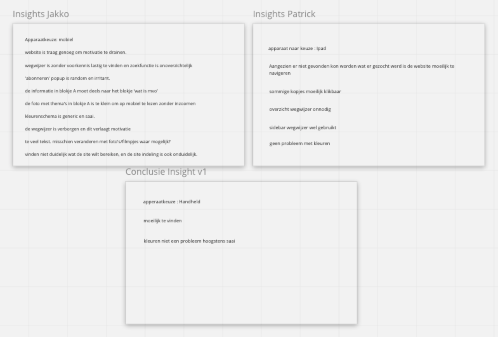
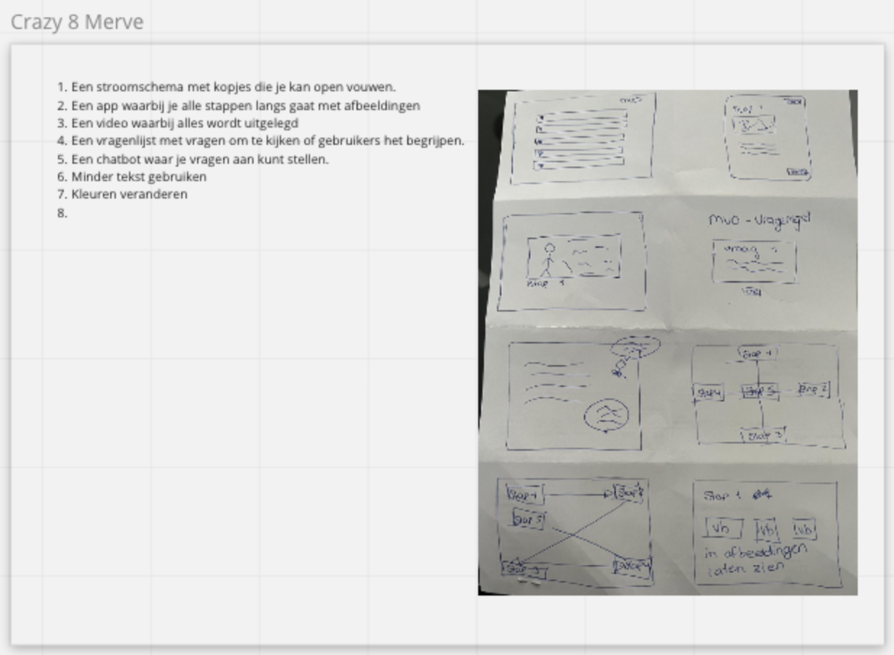
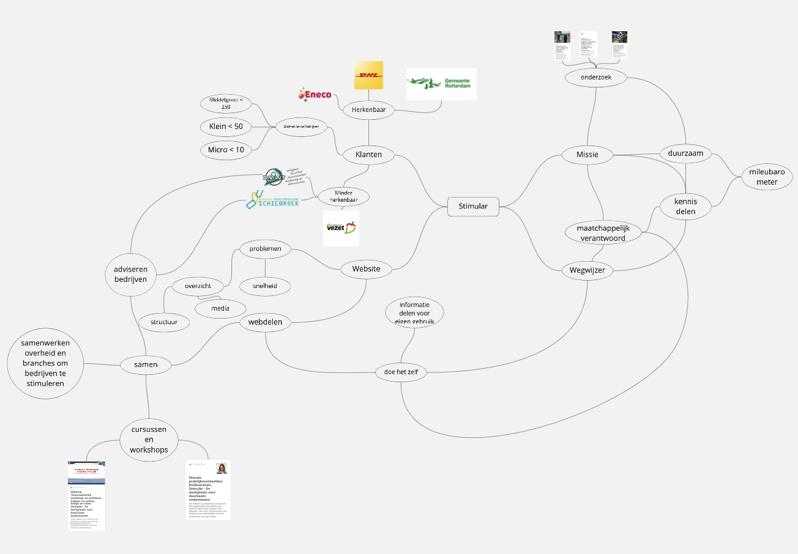
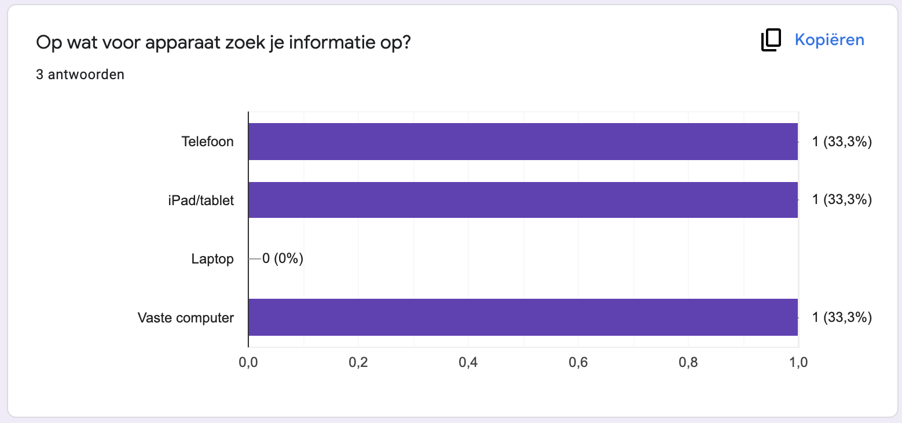

We hebben al het onderzoek die we verricht hebben op het Miro board bijgehouden. Als eerst een opsomming met wat we allemaal hebben gedaan.
Bij alle onderdelen laten we een afbeelding zien met het resultaat die we hebben. En proberen we ook een toelichting te geven over het onderzoek.
Algemeen Onderzoek
Hierbij hebben we alle 3 tegelijk binnen een bepaalde tijd onderzoek gedaan over: Wat is MVO? Wat is Stimular? Wie zijn de klanten van Stimular? Hoe staat de wegwijzer er momenteel voor? En de overige punten die we tegen gekomen zijn. Dit heeft een inzicht gegeven wat Stimular allemaal doet en wie ons doelgroep kan zijn.
Frame your design challenge
Door middel van het Frame Your Design Challenge ga je eigenlijk de hoofdvraag kaderen. Want een ontwerpuitdaging verwoordt het probleem dat je probeert op te lossen en helpt je een bereik te definiëren dat niet te smal en niet te breed is. Herdoor ga je gerichter naar het probleem kijken en kan je makkelijker naar een idee toe.
Stakeholders Map
We hebben deze stakeholders map gemaakt om een duidelijk over- en inzicht te krijgen in stakeholders van de wegwijzer/stimular. Tijdens het maken van de map hebben we kunnen terugpakken op het eerder gedaan onderzoek en deze uitbreiden door gezamelijk te bedenken wie alle stakeholders zijn en welke stakes ze dragen deze map is handig geweest om ons in een goede mindest te brengen voor de rest van het project. Dit heeft er ook voor gezorgd dat we de doelgroep beter konden formuleren.
Usability Testen
Wij hebben meerdere usability testen afgenomen. Een usability test over de huidige website die nu gebruikt wordt. Een usability test over een onderdeel van het prototype dat we aan het bouwen zijn. En als laatst een usability test over het gehele prototype. We hebben dit gebruikt om onze vermoedens over de wegwijzer en vragen over het gebruik ervan te valideren. Een van de belangrijkste vragen die wij hadden was op welke soort devices wordt de pagina gebruikt en de vermoedens die we hadden waren onder andere dat de traagheid van de website navigeren frustrerend maakt en dat de navigatie zelf zo ingewikkeld en onduidelijk is dat de gebruikers moeite hebben met het vinden wat ze zoeken.
Insights of Usability Test
Na het uitvoeren van de usability tests heeft ieder teamlid zijn resultaten samengevoegd tot een lijst aan insights. Hierdoor kregen we een duidelijk inzicht op de problemen die speelden binnen de site, zoals de overzichtelijkheid, het kleurenpallet en de vindbaarheid van de wegwijzer. Door deze resultaten samen te voegen kregen we een aantal algemene problemen te zien. Ook waren er een aantal resultaten die gelimiteerd aanwezig waren of elkaar zelfs tegenspraken. Hierdoor hadden we tijdens het ontwerpen een goed idee van waar de oplossing tot het probleem ongeveer lag.
Crazy 8
Het ontwerpen zelf was de volgende stap. We hebben de eerdere stappen gebruikt om in ons hoofd een idee te vormen van probleem en oplossing. Daarna hebben we een timer van 8 minuten aangezet om ieder zo veel mogelijk potentiële oplossingen te schetsen, de zogenaamde crazy 8. Hierna heeft iedereen de ideeën die de anderen hadden bedacht bekeken en hebben we gezamenlijk beslist welke ideeën goed waren voor een prototype en welke onderdelen van de andere ideeën we hierin wilden intergreren. Op deze manier zijn we op onze eerste 3 prototypes gekomen.
Mindmap
Vragenlijst
a
Mobile
Dit was ons eerste concept. Deze was gebasseerd op mobile.
Waarom dit concept?
Uit testen begrepen we dat de mobile populair is onder de gebruikers. We hebben een mobile one pager gemaakt met een kalm en duurzaam kleurenschema. Alle content op de website is ook in uitklapbare tabjes gezet zodat de pagina overzichtelijker is en zodat er maar 1 pagina geladen hoeft te worden om de laadtijden laag te houden. We denken dat dit concept zou werken omdat het vooral focust op het oplossen van de fundamentale problemen in de website. Dit zijn de problemen zoals de lange laadtijd en de afleidende layout en kleuren schema.
Visueel
Dit was het tweede concept, hierbij hebben we voornamelijk een focus gezet op de visuele aspecten.
Waarom?
Bij het tweede concept gaat het voornamelijk om de visuele aspecten omdat in de huidige versie hier een gebrek aan is. De visuele aspecten maken het aantrekkelijker voor een gebruiker. Zoals jullie kunnen zien hebben we hier voor 1 kleur groen gekozen en een lichte tint grijs. Dit oogt wat rustiger en maatschappelijk verantwoord. Omdat het om een wegwijzer gaat hebben we geprobeerd om dit ook echt terug te laten komen. Dit is ook gelijk het navigatie systeem. Hierbij was het de bedoeling om weinig tekst te gebruiken met veel afbeeldingen. Wel is het de bedoeling dat als de gebruiker het wil hij met zijn muis op een woord kan staan om meer informatie te verkrijgen. Waarom wij denken dat dit een goed concept is omdat er dus meer visuele aspecten zien. Dit zorgt voor de verduidelijking. Maar het zorgt er ook voor dat gebruikers niet snel afgehaakt worden. Het moet namelijk voor gebruikers wel makkelijk ogen. Een voorbeeld die ik hierbij kan geven is als we bijvoorbeeld op facebook aan het kijken zijn en dat we een lange tekst zien en gelijk verder scrollen. Maar bij het bekijken van afbeeldingen raken we minder snel afgehaakt.
Vragenlijst
Ons derde concept hebben we op een heel ander punt gericht. Hierbij willen een call to action hebben. Daarom hebben we een vragenlijst gemaakt.
Waarom?
Het derde concept is een vragenlijst die naast de wegwijzer zal komen. Deze wegwijzer zal door middel van een aantal vragen de progressie van de bezoeker op verschillende punten van MVO bepalen. Ook worden relevante en hapklare adviezen gegeven om dit te verbeteren. Met behulp van een aantal visuele aspecten wordt de bezoeker gestimuleerd om de adviezen die gegeven worden daadwerkelijk op te volgen. Door het gebruik van een enkele pagina wordt de laadtijd ingekort en kan de gebruiker constant bezig blijven. Wij verwachten de gebruiker te activeren om de vervolgstappen te nemen door op een interactieve manier relevante en hapklare vervolgstappen te presenteren waardoor de gebruiker hier gelijk mee aan de slag kan gaan. Ook wordt de gebruiker gemotiveerd met een potentieel negatief visueel middel of juist gemotiveerd verder te gaan als het positief is. Dit samen zal een effect hebben zoals de formulieren die men kan invullen bij het zoeken naar een hypotheekadvies, waar de potentie van hoge bedragen ze activeert verder te gaan in het proces.
Merve Önal
Email: 0913615@hr.nl
Patrick Broere
Email: 0991153@hr.nl
Jakko Andeweg
Email: 0998061@hr.nl